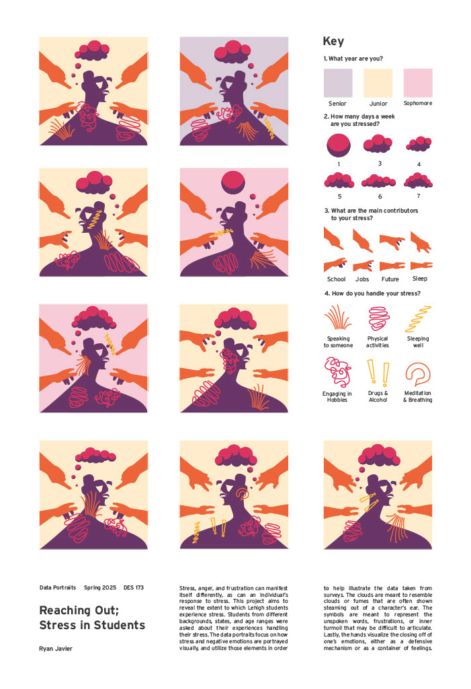
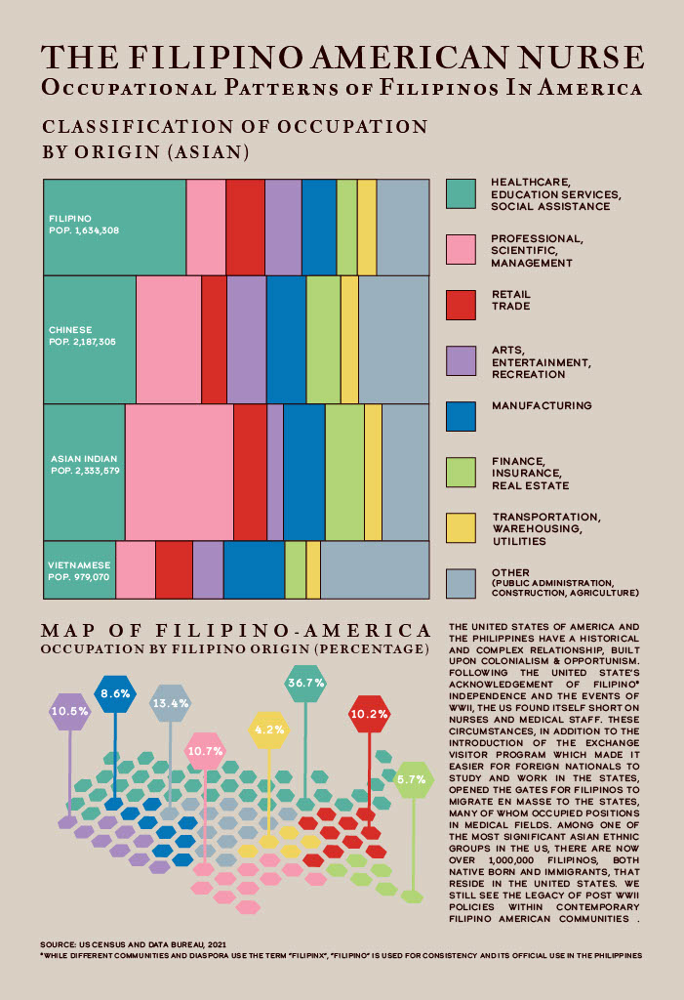
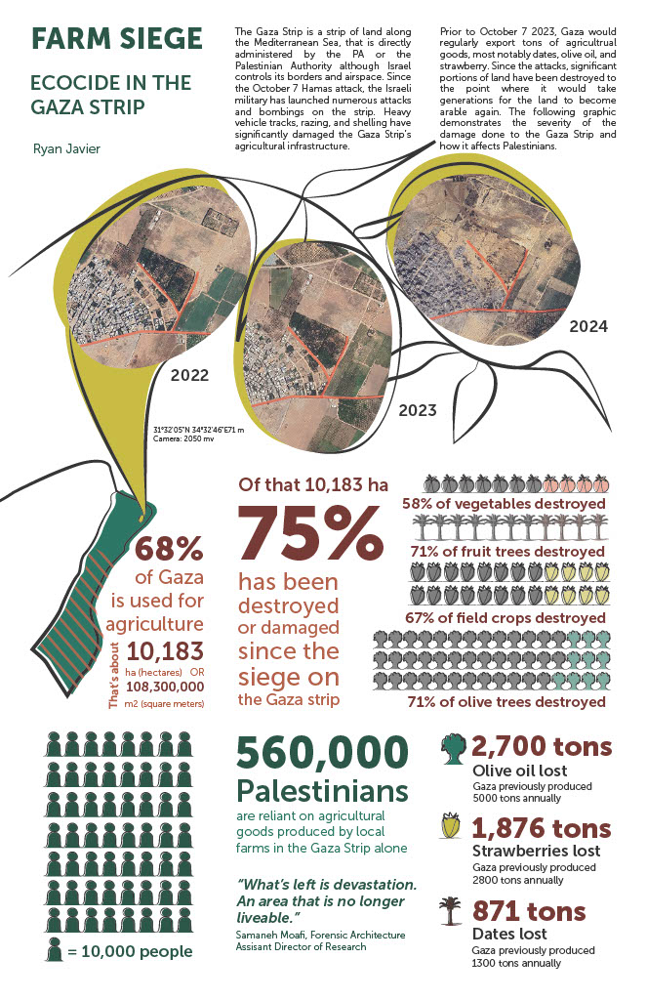

Information Design
01 - Data Portraits

Reaching Out: Stress in Students
Inspired by Giorgia Lupi's concept of data portraiture, this piece turns survey responses about student stress into individual visual portraits. Lehigh students were asked about their stress frequency, its sources, and how they cope. Rather than a bar chart or a table, each response becomes a figure, its posture, surroundings, and visual elements encoded with that student's data. The clouds represent stress volume, the hands around the figure visualize external pressures like school and jobs, and the abstract forms below encode coping mechanisms. The result is a poster where you can read individual stories and see collective patterns at the same time.
Data portraiture asks: what if every data point had a face? The challenge was building a visual language specific enough to encode real values, but expressive enough to feel like a person.
02 - The Filipino American Nurse

Occupational Patterns of Filipinos in America
This poster traces a pattern that starts in post-WWII U.S. policy and ends in a COVID-19 ICU ward. After the war, the U.S. faced a shortage of nurses and opened immigration pathways specifically to recruit Filipino medical workers. Decades later, Filipino Americans represent a disproportionately large share of the nursing workforce, a concentration that made them one of the hardest-hit groups during the pandemic. The poster uses U.S. Census Bureau data to map occupational categories across Asian ethnic groups, visualizing how Filipino Americans cluster in healthcare in a way no other group does. A hexagonal map of the U.S. adds geographic dimension, showing where that concentration lives and works.
The numbers from the Census Bureau do not explain themselves. The poster's job was to show not just what the data says, but why it looks the way it does and what it cost.
03 - Farm Siege

Ecocide in the Gaza Strip
Before October 7, 2023, Gaza exported thousands of tons of olive oil, strawberries, and dates each year. Since the siege began, 75% of the agricultural land that 560,000 Palestinians depend on has been destroyed or made unusable. This poster was designed to make those numbers land. Satellite imagery taken from the same coordinates in 2022, 2023, and 2024 shows the physical transformation of the land. Pictograms replace abstractions, giving scale to losses measured in hectares and tons. The goal was not neutrality but clarity: to turn statistics about environmental destruction into something a reader could actually see and feel.